Menu
Pães Italianos
Fermentação natural. Três ingredientes: Água, Farinha Italiana e Sal.
-
Queijo Alvorada da SerraR$ 45
-
TradicionalR$ 35
-
Toscano Mais vendido!R$ 40
-
IntegralR$ 40
-
MultigrãosR$ 40
-
PestoR$ 40
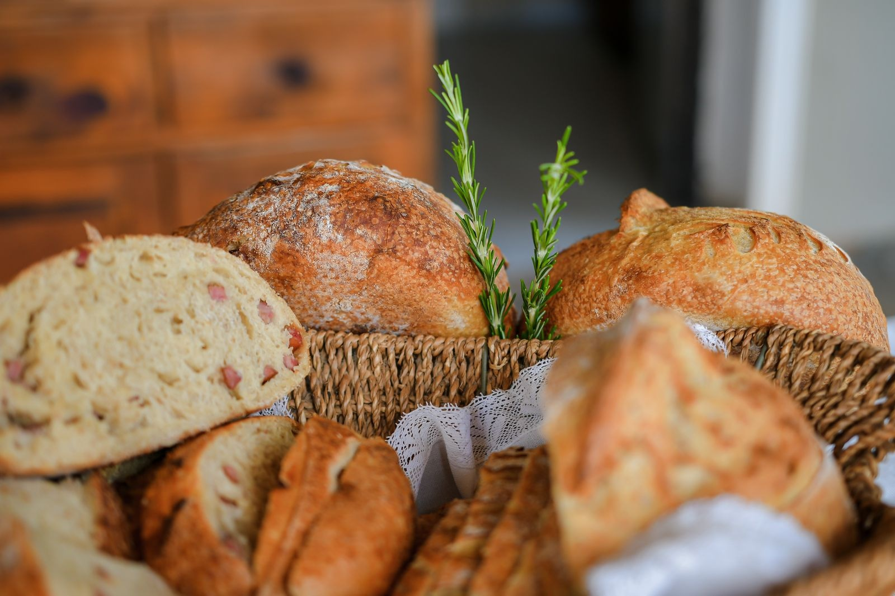
Especiais da Casa
Nossos queridinhos
-
Focaccia Italiana Sucesso de VendasR$ 70
-
Pão de Queijo Mineiro (0,5Kg) *Assado acréscimo de R$5R$ 30
-
Granola Artesanal Mais Vendido!R$ 45
-
Granola SalgadaR$ 45
-
Caseirinho Pão MacioR$ 25
-
Brioche LançamentoR$ 65
-
Brioche com blend de chocolate nobre LançamentoR$ 70
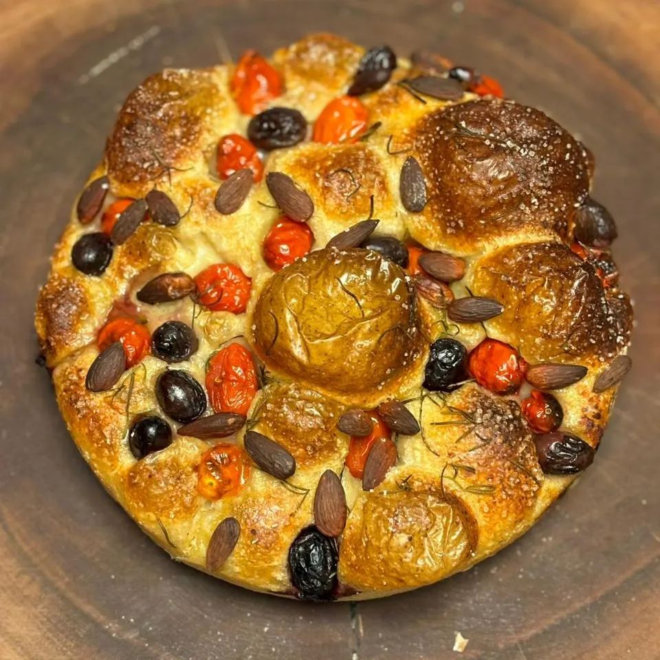
Massas Artesanais
Receitas tradicionais da cidade feitas com Farinha Italiana
💡 Dica do Santo Forno: Recomendação por refeição: 250g por pessoa!
-
Ravioli de Ragu de Ossobuco (0,5Kg)R$ 75
-
Ravioli de Boursin (0,5Kg)R$ 75
-
Capeletti de Linguiça com Parmesão (0,5Kg) Mais Vendido!R$ 55
-
Capeletti de 4 queijos (0,5Kg)R$ 60
-
Capeletti de Ragu de Ossobuco (0,5Kg)R$ 65
Recomendamos fazer sua massa com nosso:
-
Ragu de OssobucoR$ 55
-
BrodoR$ 27
-
Molho napolitanoR$ 27
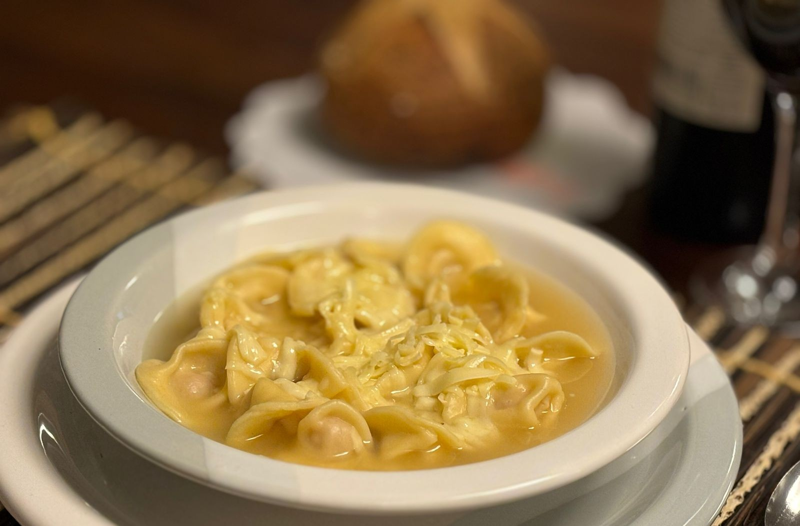
Empório das Tortas
Tortas Doces ~ 1,5Kg R$ 160
Rende de 10 a 12 fatias bem servidas.
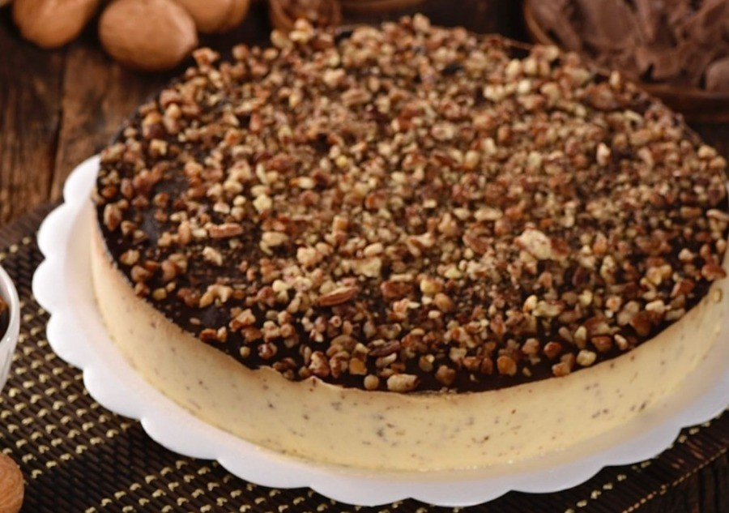
Alemã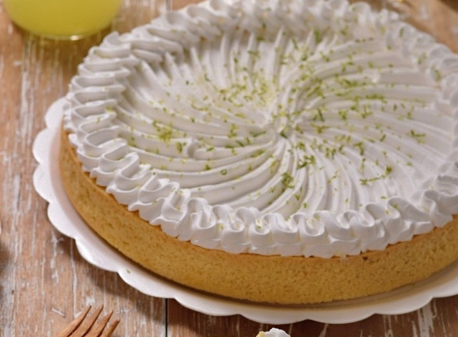
Limão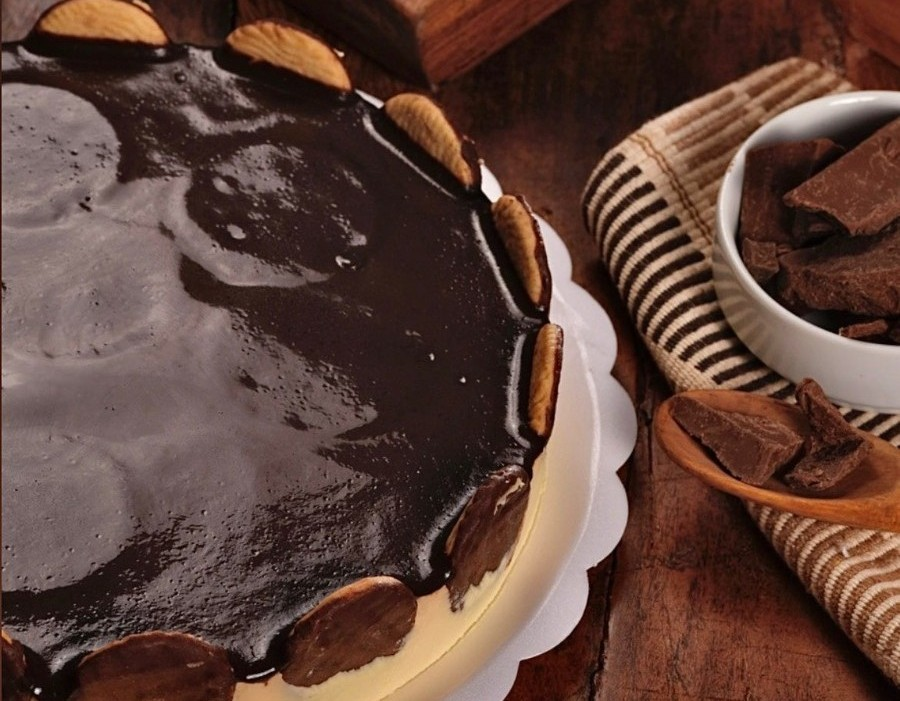
Holandesa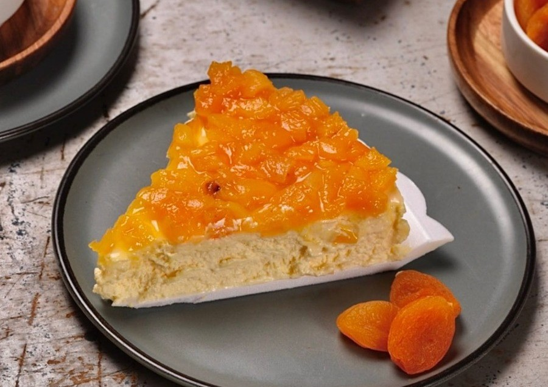
Damasco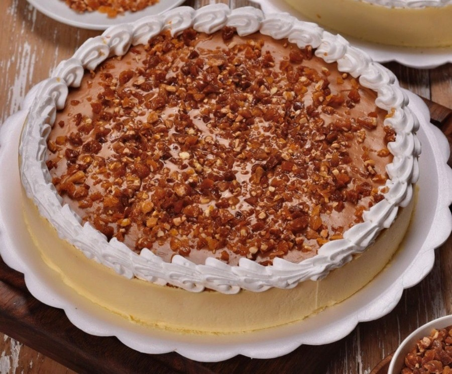
Crocante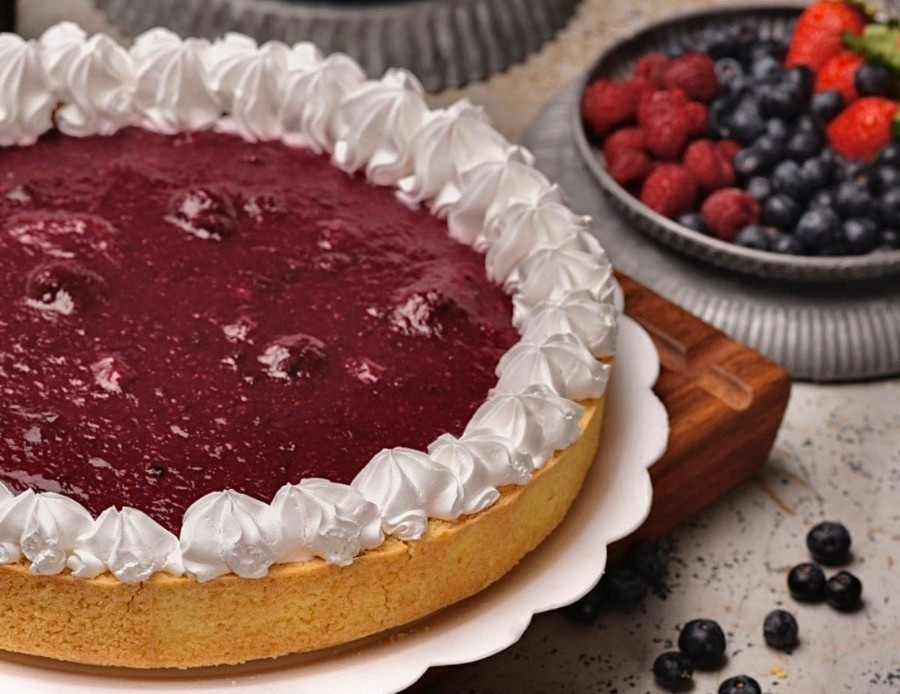
Frutas VermelhasTortas Salgadas ~ 1,7Kg R$ 130
Rende de 10 a 12 fatias bem servidas.
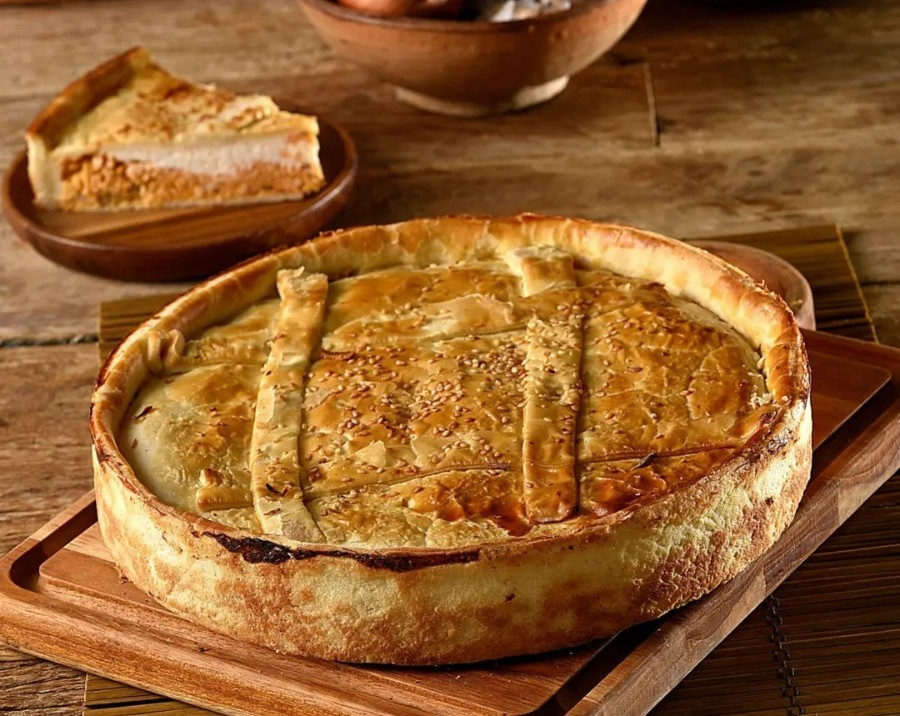
Frango com Catupiry ou Palmito
Localizado na Fazenda Lyria em Socorro (SP), na Serra da Mantiqueira, o Apiário Santa Colmeia®, cujo Engenheiro Agrônomo responsável Sérgio, produz mel em uma reserva protegida com mais de 3 milhões de m². Em parceria com os projetos Copaíba e SOS Mata Atlântica, unimos a recuperação de nascentes à polinização consciente. Com manejo sustentável e colheita equilibrada, entregamos um produto puro, saudável e de qualidade inigualável: mel de verdade.
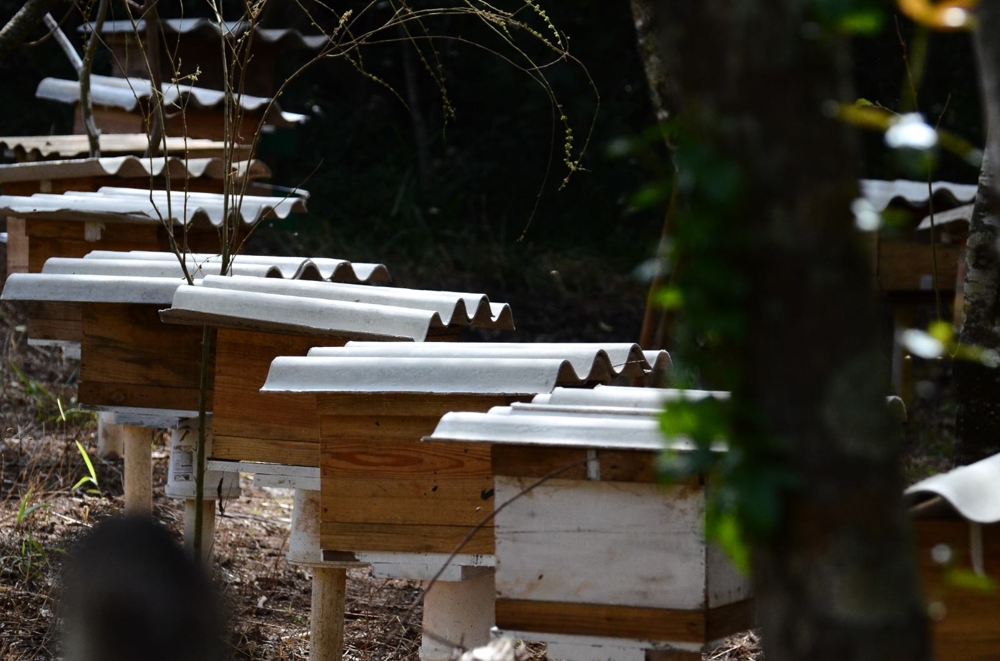
-
Mel 330gR$ 25
-
Mel 750g *Floradas especiais +R$ 5R$ 60
-
Própolis 30 ml *30% álcool de cerealR$ 30
-
Pólen Apícola 80gR$ 35
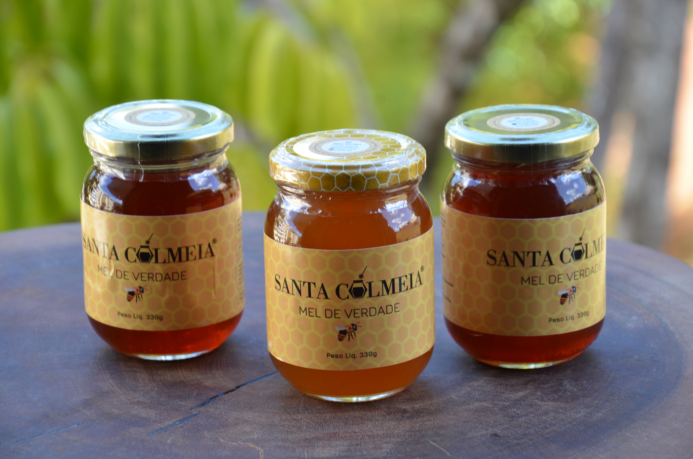
Belo Sapore
Fundada em 2026 pela ex-executiva Mari Carvalho, carinhosamente conhecida por Mari Mineira, a Belo Sapore surgiu para transformar 30 toneladas de mangas anualmente até então desperdiçadas em produtos artesanais únicos.
Sua receita celebra a fruta em sua melhor forma, estimulando um consumo com mais presença e carinho nos pequenos rituais do dia a dia. Belo Sapore valoriza o que é vivo, autêntico e feito à mão, provando que o simples pode ser surpreendentemente especial.
-
Geléia de Pimenta 200gR$ 40
-
Geléia de Gengibre 200gR$ 40
-
Geléia de Limão Siciliano 200gR$ 40
-
Geléia de Licor de Maracujá 200gR$ 40
-
Chutney de Manga 200gR$ 45
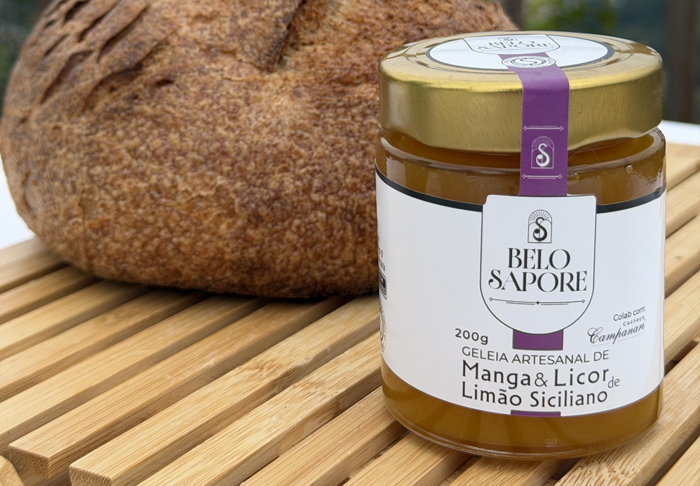
 Faça seu Pedido via WhatsApp
Faça seu Pedido via WhatsApp
Nossa História
A Santo Forno nasceu em 2022 da paixão da Valéria por alimentos de verdade. Nossa proposta é unir o sabor acolhedor da origem mineira à delicadeza da cozinha italiana: do pão de queijo às massas artesanais, como capeletti e ravioli, nossos carros-chefe, além do pão italiano de fermentação natural (levain). Trabalhamos com ingredientes selecionados, como a farinha italiana e queijos artesanais locais. Nosso principal objetivo é produzir alimentos que celebram o tempo de mesa em família. Atendemos principalmente sob encomenda, garantindo o cuidado artesanal e entregas personalizadas. Experimente também nosso mel Santa Colméia® de produção própria.
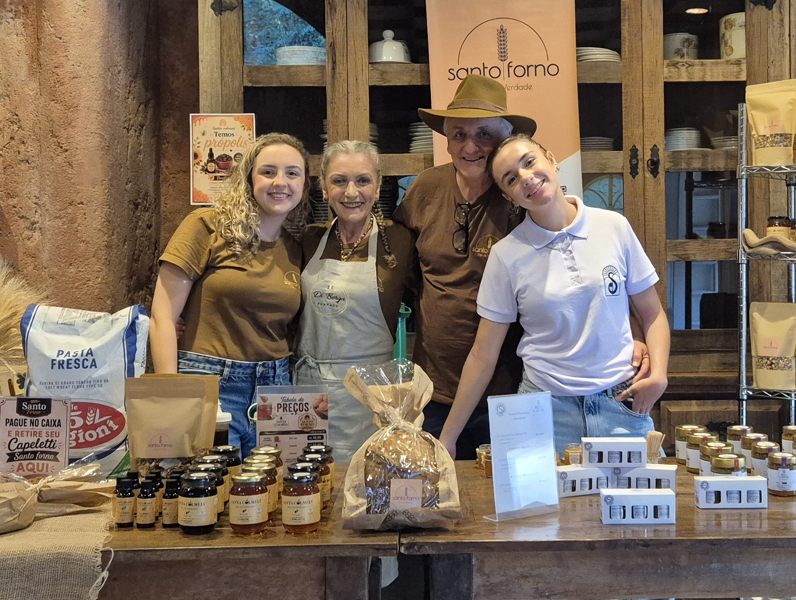
O que nossos clientes dizem
Avaliações no Google
"Os pães de fermentação natural e os capelettis são espetaculares! Dá para sentir o cuidado artesanal e o sabor do queijo de verdade em cada pedaço."
— Cliente Google"Atendimento impecável e produtos de primeiríssima qualidade. A focaccia e o pão toscano são meus favoritos para a mesa em família."
— Cliente GoogleFAQ
Perguntas Frequentes — Clique na pergunta para ver a resposta
1. Pedidos e Funcionamento
Com quanto tempo de antecedência devo fazer meu pedido?
Pedimos que os pedidos sejam feitos com no mínimo 2 dias de antecedência. Como nossos pães passam por um processo de longa fermentação natural (levain) e nossas massas são feitas artesanalmente, precisamos desse tempo para preparar tudo com o devido cuidado.
O que acontece em caso de desistência?
Fazemos encomendas sob medida para o seu momento. Porém, por se tratar de um processo artesanal e sob demanda, cancelamentos ou desistências feitos com menos de 24 horas de antecedência serão cobrados normalmente, pois a produção já terá sido iniciada e isso gera desperdício de insumos nobres.
Vocês têm espaço físico para sentar e tomar um café?
Não. Trabalhamos com portas fechadas, focados exclusivamente na produção artesanal. Atendemos apenas via retirada no local (sob encomenda) ou delivery.
2. Produtos e Disponibilidade
Como funciona a disponibilidade e o envio das tortas?
Recomendamos sempre consultar a disponibilidade a pronta entrega pelo nosso WhatsApp. Ao fazer seu pedido, você pode escolher se prefere retirar a torta congelada ou pronta para consumo/preparo.
As massas artesanais vêm frescas ou congeladas?
Todas as nossas massas (como capelettis e raviolis) são entregues congeladas e sem preparo.
O pão de queijo é vendido assado ou congelado?
Você pode escolher! Vendemos o pacote de pão de queijo mineiro congelado para você assar quando quiser ou assado na hora (com acréscimo de R$ 5,00 no pedido).
Os pães contêm glúten?
Sim. Apesar de trabalharmos com o processo de longa fermentação, os nossos pães e massas podem conter glúten e não são indicados para pessoas celíacas.
3. Entregas e Pagamento
Vocês fazem entregas na região de Serra Negra? Qual é o valor do frete?
Entregamos em Serra Negra com taxa fixa de R$ 5,00. Para entregas em cidades vizinhas da região, consulte a disponibilidade e o valor do frete diretamente no nosso WhatsApp.
Vocês enviam produtos não perecíveis por Correios?
Sim! Enviamos todos os produtos Santa Colmeia (mel, própolis e pólen), geléias Belo Sapore e granolas por Correios para todo o Brasil.
Quais são as formas de pagamento aceitas?
Aceitamos pagamentos via PIX ou Dinheiro. O pagamento deve ser realizado no momento da retirada do produto ou no ato da entrega.